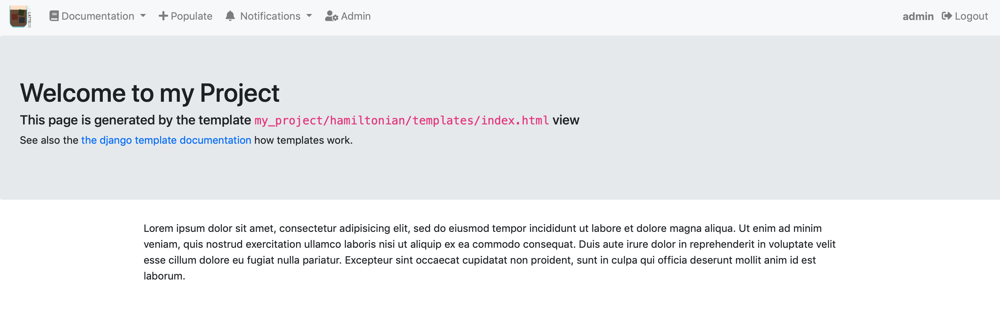
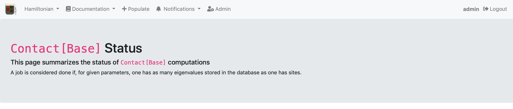
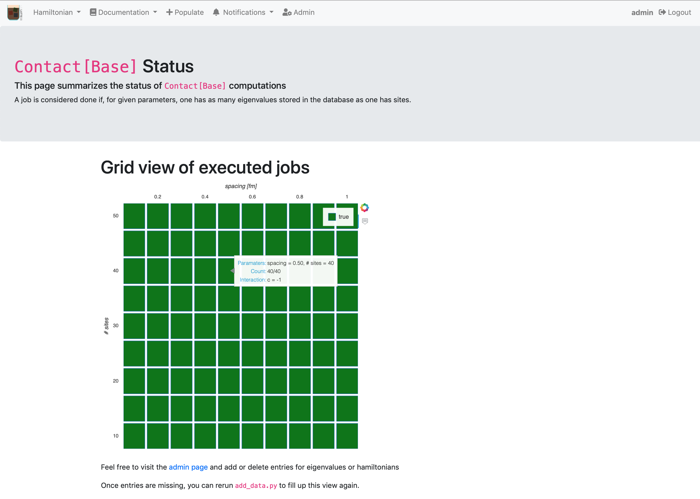

Creating web views for summaries¶
Views are Python objects which provide information for html templates. E.g., they query the database and return strings to be rendered in your browser. When you enter an url in your browser, django figures out which Python object to call which knows which template to render.
EspressoDB implements default views like the project homepage called which is rendered by the index.html template.
Adjusting the index template¶
When looking for the index template, django first checks your project tempalte directories, e.g., my_project/hamiltonian/templates/ and then enters EspressoDB’s template dirs.
It renders the first template which matches the specification.
Thus, when you create my_project/hamiltonian/templates/index.html, you will overwrite the default index page.
Here is an example of how to overwrite the index page.
{% extends 'base.html' %}
{% block content %}
<div class="jumbotron">
<h1>Welcome to my Project</h1>
<h5>This page is generated by the template <code>my_project/hamiltonian/templates/index.html</code> view</h2>
<p>
See also the
<a href="https://docs.djangoproject.com/en/2.2/ref/templates/language/">
the django template documentation
</a>
how templates work.
</p>
</div>
<div class="container">
<p>{% lorem %}</p>
</div>
{% endblock %}
This will adjust the index page to 
Content with {% ... %} or {{ ... }} will be parsed by the view.
E.g., {% ... %} denote template tags which can be loops, if statements and more.
The {{ ... }} templates will render variables.
Most importantly, for this template are the texts {% extends 'base.html' %}, which tells that it should use the base.html template and extend it.
Thus the link navbar and further html content will be present without you not having to write anything.
The {% block content %} and {% endblock %} denotes that within the base.html template, the content between the same exact blocks will be replace with what you want to render.
See also the django docs for more information on templates.
Last but not least, EspressoDB comes with a few default css and javascript packages like KaTeX to render equations and Bootstrap 4 for having nice looking responsive webpages with minimal effort.
Views with plots¶
A nice feature of the Python backend is that you can directly export your plots to a homepage. Whenever new data is added, your plot is dynamically updated. So a possible plot page for this project would be a status view which summaries for which Hamiltonian all of the eigenvalues have been computed and which computations need to be repeated.
It is possible to just use matplotlib, store images dynamically and display them in your view. In this example we have decided to use Bokeh as it allows to have dynamic plots, which allow to, e.g., to zoomi, or use mouse over effects on the web view (without storing images in an intermediate step).
To prepare the usage, you should install
pip install bokeh
It is good practice to place all dependencies in the project requirements.txt file as well.
Creating a template view¶
We first start with setting up the view
Within the my_project/hamiltonian/views.py add the following lines
from django.views.generic.base import TemplateView
from my_project.hamiltonian.models import Contact as ContactHamiltonian
class HamiltonianStatusView(TemplateView):
template_name = "status.html"
model = ContactHamiltonian
def get_context_data(self, **kwargs):
context = super().get_context_data(**kwargs)
context["model"] = self.model
return context
The
TemplateViewclass is a class with streamlines generating views.The
template_name = "status.html"tells django to look for a file calledstatus.htmlto render this viewThe
get_context_datamethod provides additional information to the rendering. E.g., that the model we are using is aContactHamiltonian. We overload the default method to guarantee that we do not eliminate other needed infromation.
Creating the template¶
Next we actually have to create the to be rendered template.
To do so, create the file my_project/hamiltonian/templates/status.html and add the following code
{% extends 'base.html' %}
{% block content %}
<div class="jumbotron">
<h1><code>{{model}}</code> Status</h1>
<h5>This page summarizes the status of <code>{{model}}</code> computations</h2>
<p>
A job is considered done if, for given parameters, one has as many eigenvalues stored in the database as one has sites.
</p>
</div>
{% endblock %}
The {{model}} now make use of the context parameter we have added (and will be rendered by the str(ContactHamiltonian) Python method).
Update the urls¶
To view this page online, we have to let django know where to find it.
This is done by adjusting my_project/hamiltonian/urls.py to include the following lines
from django.urls import path
from my_project.hamiltonian.views import HamiltonianStatusView
app_name = "hamiltonian"
urlpatterns = [path("status/", HamiltonianStatusView.as_view(), name="status")]
E.g., when you visit http://127.0.0.1:8000/hamiltonian/status/, the HamiltonianStatusView.as_view() method is called, which renders the template.
By default, EspressoDB scans all your app directories and adds links to the navbar. Thus, you should now be able to obtain the following web view 
Preparing data¶
Next we want to prepare data for the status view
...
from my_project.hamiltonian.models import Eigenvalue
class HamiltonianStatusView(TemplateView):
...
def prepare_data(self) -> "DataFrame":
hamiltonians = self.model.objects.all()
eigenvalues = Eigenvalue.objects.filter(hamiltonian__in=hamiltonians)
level_count = (
eigenvalues.to_dataframe(fieldnames=["hamiltonian__id", "n_level"])
.rename(columns={"hamiltonian__id": "id"})
.groupby(["id"])
.count()
)
df = (
hamiltonians.to_dataframe(fieldnames=["id", "spacing", "n_sites", "c"])
.set_index("id")
.join(level_count, on="id")
)
df["done"] = df["n_sites"] == df["n_level"]
df["color"] = "green"
df["color"] = df.color.where(df.done, "red")
return df
By default EspressoDB queries can be converted to pandas DataFrames using django-pandas this simplifies the logic of this code:
We get all Hamiltonians for the specified
self.modelWe find all eigenvalues associated with the Hamiltonians
For each hamiltonian (id), we count the number of associated entries
We join the count information with the Hamiltonian information
We define that a job is done if the numbers of sites is the same as the numbers of eigenvalues
We add a color column corresponding to the “done” status
Preparing the plot¶
Next we create a Bokeh grid plot within the status view class which will take the prepared DataFrame as input
...
from bokeh.plotting import figure
class HamiltonianStatusView(TemplateView):
...
@staticmethod
def prepare_figure(data: "DataFrame") -> "Figure":
fig = figure(
x_axis_location="above",
tools="hover",
tooltips=[
("Paramaters", "spacing = @spacing{(0.3f)}, # sites = @n_sites"),
("Count", "@n_level/@n_sites "),
("Interaction", "c = @c "),
],
width=600,
height=600,
)
fig.rect(
"spacing",
"n_sites",
width=0.09,
height=4.6,
source=data,
fill_color="color",
legend="done",
)
fig.xaxis.axis_label = "spacing [fm]"
fig.xaxis.axis_label_standoff = 10
fig.yaxis.axis_label = "# sites"
fig.yaxis.axis_label_standoff = 10
fig.outline_line_color = None
fig.grid.grid_line_color = None
fig.axis.axis_line_color = None
fig.axis.major_tick_line_color = None
fig.axis.minor_tick_line_color = None
fig.x_range.range_padding = 0.0
fig.y_range.range_padding = 0.0
return fig
Wrapping things together¶
To let the template know that we have created a plot, we need to pass the infromation to the context.
Thus we have to update the previously written get_context_data method
...
from bokeh.embed import components
from bokeh import __version__ as bokeh_version
class HamiltonianStatusView(TemplateView):
model = ContactHamiltonian
template_name = "status.html"
def get_context_data(self, **kwargs):
context = super().get_context_data(**kwargs)
df = self.prepare_data()
fig = self.prepare_figure(df)
script, div = components(fig)
context["script"] = script
context["div"] = div
context["model"] = self.model
context["bokeh_version"] = bokeh_version
return context
The bokeh.embed.components transforms our figure into html and javascript objects which the webpage can render.
Furthermore, we need the bokeh_version to ensure that your Python bokeh installation matches the Bokeh javascript version.
Finally, we need to let the template know how to render the plot.
The new status.html should look like this
{% extends 'base.html' %}
{% block head-extra %}
<link href="https://cdn.pydata.org/bokeh/release/bokeh-{{bokeh_version}}.min.css" rel="stylesheet" type="text/css">
<link href="https://cdn.pydata.org/bokeh/release/bokeh-widgets-{{bokeh_version}}.min.css" rel="stylesheet" type="text/css">
<script defer src="https://cdn.pydata.org/bokeh/release/bokeh-{{bokeh_version}}.min.js"></script>
<script defer src="https://cdn.pydata.org/bokeh/release/bokeh-widgets-{{bokeh_version}}.min.js"></script>
<script defer src="https://cdn.pydata.org/bokeh/release/bokeh-tables-{{bokeh_version}}.min.js"></script>
{% endblock%}
{% block content %}
<div class="jumbotron">
<h1><code>{{model}}</code> Status</h1>
<h5>This page summarizes the status of <code>{{model}}</code> computations</h2>
<p>
A job is considered done if, for given parameters, one has as many eigenvalues stored in the database as one has sites.
</p>
</div>
<div class="container">
<h1>Grid view of executed jobs</h1>
{{div|safe}}
</div>
<div class="container my-4">
<p>Feel free to visit the <a href="{% url 'admin:index' %}">admin page</a> and add or delete entries for eigenvalues or hamiltonians</p>
<p>Once entries are missing, you can rerun <code>add_data.py</code> to fill up this view again.</p>
</div>
{{script|safe}}
{% endblock %}
In the {% block head-extra %}, we have loaded the CSS and javascript file version of Bokeh.
We have decided to not included it ourselves (meaning on you machine), as this allows you to install any Bokeh version you like.
But therefore they will be downloaded once you view this page.
Furthermore, we have added the additional |sage template filter for {{div|safe}} and {{script|safe}}.
This means that django should trust this source and actually execute html / javascript statements.
Without that, the template variables would not be rendered and presented as raw code.
If you now visit the status page, you should either see a completely red or completely green status report, depending on if you have run the updated eigenvalues script 
You can now play around and delete some hamiltonians or eigenvalues, e.g., from the admin page and rerun the computation script.
Summary¶
The final source code for this example can also be found in the EspressoDB repository.